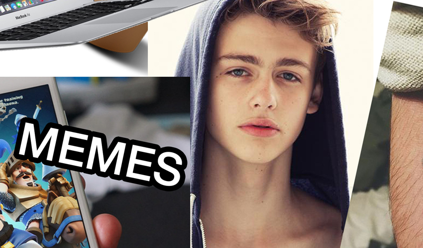
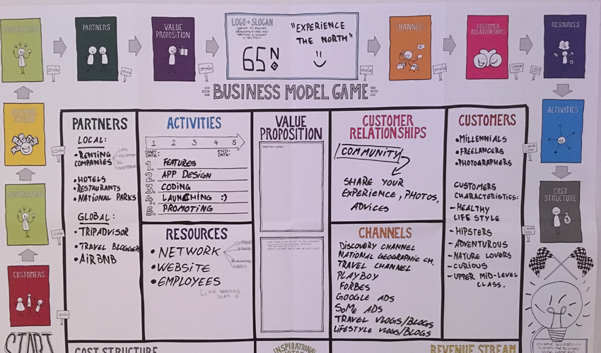
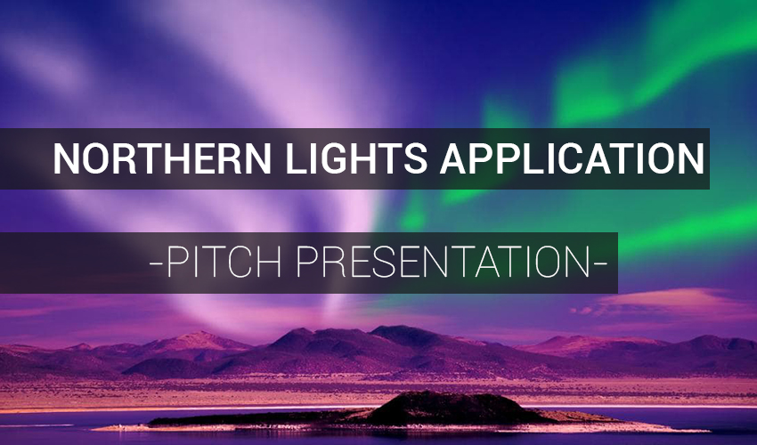

THEME 01
Basic Web Design
(Click on the images to see the projects.)
01_04_01
Responsive website (a.k.a. Commencement of study exam)
One of the bigest challenges at KEA, creating a fully responsive website. Being the first project of this kind, I had a lot of difficulties, but taking them step by step I have managed to overcome all of them.
Responsive website (a.k.a. Commencement of study exam)
One of the bigest challenges at KEA, creating a fully responsive website. Being the first project of this kind, I had a lot of difficulties, but taking them step by step I have managed to overcome all of them.
01_05_03
Link to redesigned web site
Group projects are also a good part of this education, learning how to cooperate with other people from different countries in order to create something together is something I value very much. Together with this groupmates we have redesigned an awful looking website and we gave it a new visual identity.
This webpage is password protected.
username: keammd
passcode: code_2017
Link to redesigned web site
Group projects are also a good part of this education, learning how to cooperate with other people from different countries in order to create something together is something I value very much. Together with this groupmates we have redesigned an awful looking website and we gave it a new visual identity.
This webpage is password protected.
username: keammd
passcode: code_2017
01_05_04
Presentation
I have learned that the design is not all about aestethics. Is about some rules, why do you have to use that colour, why that font, etc. Is about conducting tests, making research and inform yourself about what you have to do. Therefore, reports are the website's image in a document, how and why.
Presentation
I have learned that the design is not all about aestethics. Is about some rules, why do you have to use that colour, why that font, etc. Is about conducting tests, making research and inform yourself about what you have to do. Therefore, reports are the website's image in a document, how and why.
THEME 02
Basic Animation
02_01_02
Link to simple animation
The introduction of JavaScript made me say "wow". I knew that coding was hard and I was actually waiting for this part. The project was theme-free and having to made basic animations was really fun. Therefore I have made a little game. There's no losing or winning, just having fun.
Link to simple animation
The introduction of JavaScript made me say "wow". I knew that coding was hard and I was actually waiting for this part. The project was theme-free and having to made basic animations was really fun. Therefore I have made a little game. There's no losing or winning, just having fun.
02_02_01
Style tile & Story idea
A new project has started and this time we had to make a more complex, interactive animation. This means that some research had to be done. So I did, and I came up with this story idea and this style tile.
Style tile & Story idea
A new project has started and this time we had to make a more complex, interactive animation. This means that some research had to be done. So I did, and I came up with this story idea and this style tile.
02_02_02
Story board & Work sheet
It was the first time I made a storyboard and it was really helpful. It is organising all the ideas that are sitting messy in the head and is helping the creating process a lot by saving time. It made me realise that is not all about screens and keyboards, sometimes the pen and the papper are better tools.
Story board & Work sheet
It was the first time I made a storyboard and it was really helpful. It is organising all the ideas that are sitting messy in the head and is helping the creating process a lot by saving time. It made me realise that is not all about screens and keyboards, sometimes the pen and the papper are better tools.
02_02_03
Sprite sheet animation
Knowing that the interactive animation project is going to be a level changer for us, we didn't had to take a huge leap for it. Instead, we took it step by step, which is the normal way of making things. I had to create a looping animation, in the style of the interactive animation I had to make later.
Sprite sheet animation
Knowing that the interactive animation project is going to be a level changer for us, we didn't had to take a huge leap for it. Instead, we took it step by step, which is the normal way of making things. I had to create a looping animation, in the style of the interactive animation I had to make later.
02_03_02
Interactive animation
"Now that you made the simple animation, the story idea, style tile, storyboard, sprite sheet, you have to make the real interactive animation". Coding, coding, coding, coding and voila! It was finally ready. Too late I realized that is not so responsive, it was working only on my screen, but the hardest part, JavaScript, was there, and it was working the way I wanted to! It was a big achievement for me personally and has proven to me that I can learn coding even if I just started to learn it at KEA.
Interactive animation
"Now that you made the simple animation, the story idea, style tile, storyboard, sprite sheet, you have to make the real interactive animation". Coding, coding, coding, coding and voila! It was finally ready. Too late I realized that is not so responsive, it was working only on my screen, but the hardest part, JavaScript, was there, and it was working the way I wanted to! It was a big achievement for me personally and has proven to me that I can learn coding even if I just started to learn it at KEA.
02_03_03
Pool Project #1
Because we now know JavaScript...or at least 2% of it, we can make some mini-games. Picking from a pool of projects, I took the random flying fly project. I met the minimum requirements and I was above them, but the project was still not perfect. The fly is not stopping even if you hit it. Maybe...it is an online undying entity. But without joking, this project has taught me another 1% of JS, along with some mathematical variations.
Pool Project #1
Because we now know JavaScript...or at least 2% of it, we can make some mini-games. Picking from a pool of projects, I took the random flying fly project. I met the minimum requirements and I was above them, but the project was still not perfect. The fly is not stopping even if you hit it. Maybe...it is an online undying entity. But without joking, this project has taught me another 1% of JS, along with some mathematical variations.
02_03_04
Pool Project #2
Music to my ears. While pressing a specific key. This was this project about. Finally I was able to create one of the mini-games I have spent on a lot of time during my childhood. The drum machine.
Pool Project #2
Music to my ears. While pressing a specific key. This was this project about. Finally I was able to create one of the mini-games I have spent on a lot of time during my childhood. The drum machine.
02_04_02
Personas Collage
Because we had to make an interactive animation, inspired from a movie, with different types of endings, that we had to present in an exhibition, we had to know our target audience. Therefore we had to create a moodboard for the Danish teenager aged 16-17 years old. This is what me and my team came with.

Personas Collage
Because we had to make an interactive animation, inspired from a movie, with different types of endings, that we had to present in an exhibition, we had to know our target audience. Therefore we had to create a moodboard for the Danish teenager aged 16-17 years old. This is what me and my team came with.
02_04_03
Story Board
Together with my team-mates I watched the movie we had to animate. After that, inspired from it, with a pen and a paper, we started to create the storyboard for our animation. It has proven again to be a good thing to do, making the creative process more precise, knowing exactly what we had to do next.
Story Board
Together with my team-mates I watched the movie we had to animate. After that, inspired from it, with a pen and a paper, we started to create the storyboard for our animation. It has proven again to be a good thing to do, making the creative process more precise, knowing exactly what we had to do next.
02_04_04
Summary of Expert Test
We had an idea, but we had to know if it would fit our target audience. We are not teenagers anymore and those from today are different than we were, generations changing sometimes from one year to another. Therefore, we had to conduct some tests to see what do they like, what are they looking for, what do they want to see.
Summary of Expert Test
We had an idea, but we had to know if it would fit our target audience. We are not teenagers anymore and those from today are different than we were, generations changing sometimes from one year to another. Therefore, we had to conduct some tests to see what do they like, what are they looking for, what do they want to see.
THEME 03
Basic Video
03_01_01
A story told with moving images (and no words)
One of the projects I love the most. Being a photographer, having to make a video was a thing related my domain of activity. I told my team-mates my idea of making a timelapse, idea which they agreed with. Everybody took some shots and I have also made the editing with Premiere and After Effects. The only problem was the deadline. We had to make this video in two days. The time was not enough to make something very professional and the wearther was, well...Danish. Even so, I am happy with the result.
A story told with moving images (and no words)
One of the projects I love the most. Being a photographer, having to make a video was a thing related my domain of activity. I told my team-mates my idea of making a timelapse, idea which they agreed with. Everybody took some shots and I have also made the editing with Premiere and After Effects. The only problem was the deadline. We had to make this video in two days. The time was not enough to make something very professional and the wearther was, well...Danish. Even so, I am happy with the result.
03_02_01
Storyboard
The second video project was a bigger one. This time we had actors, which changed the game. And how can you show them what they have to do? Make a storyboard! It also helps the actors, while helping the camera crew and the editors. Me and my group-mates were having all those positions in this project, therefore we made the storyboard together, each one of us coming with an idea that gave a shape to the whole story.
Storyboard
The second video project was a bigger one. This time we had actors, which changed the game. And how can you show them what they have to do? Make a storyboard! It also helps the actors, while helping the camera crew and the editors. Me and my group-mates were having all those positions in this project, therefore we made the storyboard together, each one of us coming with an idea that gave a shape to the whole story.
03_02_02
City Walk and Meetup
"ACTION!....CUT! Let's see what we got. Not yet, try one more time." And this is how 3 days passed, trying to get the best shot. And we got the best shots! It was one of the projects I had the most fun, filming all day long with my colleagues. One more time, the storyboard has proven to be very useful. We know what we had to do, how and when. We just had to take the best footage. This is the vlog-like video we made.
City Walk and Meetup
"ACTION!....CUT! Let's see what we got. Not yet, try one more time." And this is how 3 days passed, trying to get the best shot. And we got the best shots! It was one of the projects I had the most fun, filming all day long with my colleagues. One more time, the storyboard has proven to be very useful. We know what we had to do, how and when. We just had to take the best footage. This is the vlog-like video we made.

THEME 04
Basic UX - Build Your Own Digital Business
04_02_01
Business Model Canvas
A great self-teaching game! There is not much to say about this project, just that we have learned some great ways of finding the foundation of what our company will have to stand on, from budget and resources to target audience.

Business Model Canvas
A great self-teaching game! There is not much to say about this project, just that we have learned some great ways of finding the foundation of what our company will have to stand on, from budget and resources to target audience.
04_02_02
Report
One of the most detailed reports we have ever made, having to research about things like what can our app do, if is it needed, if yes then who is the target group, what features can we implement, and so on. It made us think a lot and it has increased our horizon in terms of how to set up a company and an app.
Report
One of the most detailed reports we have ever made, having to research about things like what can our app do, if is it needed, if yes then who is the target group, what features can we implement, and so on. It made us think a lot and it has increased our horizon in terms of how to set up a company and an app.
04_03_01
Design documentation
But a report is not enough. We had to create the design documentation and for example, one of the most interesting facts was the dark colours we picked and why. Being an app for the northern lights hunters, their eye-sight will be night-adjusted and therefore we don't want to affect this sight by having a bright-coloured app.
Design documentation
But a report is not enough. We had to create the design documentation and for example, one of the most interesting facts was the dark colours we picked and why. Being an app for the northern lights hunters, their eye-sight will be night-adjusted and therefore we don't want to affect this sight by having a bright-coloured app.
04_04_01
Web prototype
Every successful company, every succesful app has a website nowadays. So we had to make one.My colleagues were in charge with the coding part, while I was creating the design. I have made it so that the it will be in balance with the design characteristics that were present in the app too.
Web prototype
Every successful company, every succesful app has a website nowadays. So we had to make one.My colleagues were in charge with the coding part, while I was creating the design. I have made it so that the it will be in balance with the design characteristics that were present in the app too.
04_04_02
Pitch presentation
Why is our app innovative? How can we sell it? How can we maintain it? We had to present those things in front of our colleagues and our teacher. We had to convince them that our app is an icebreaker. It was a real success, the presentation went very well and our application was received with applause.

Pitch presentation
Why is our app innovative? How can we sell it? How can we maintain it? We had to present those things in front of our colleagues and our teacher. We had to convince them that our app is an icebreaker. It was a real success, the presentation went very well and our application was received with applause.